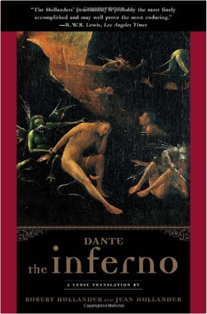
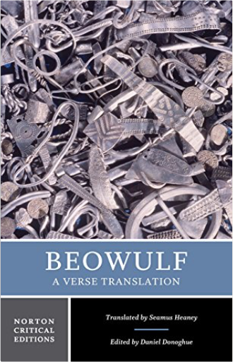
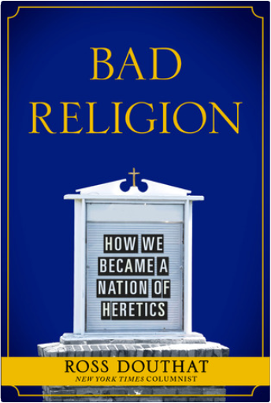
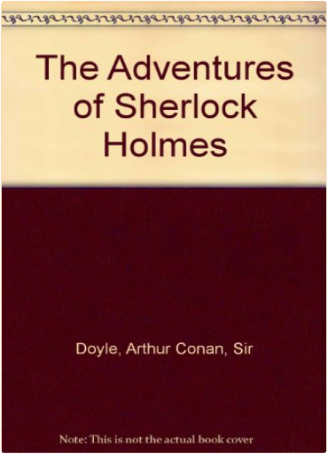
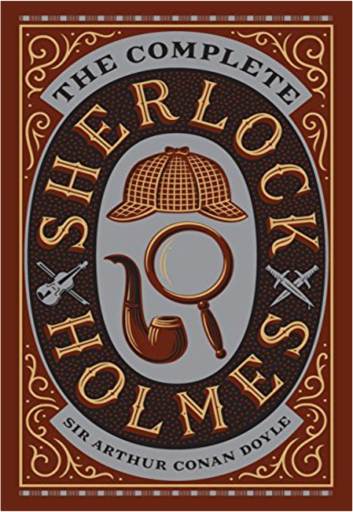
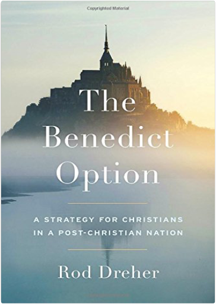
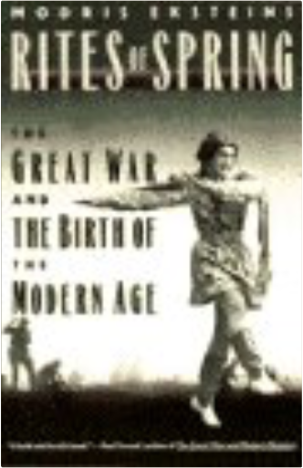
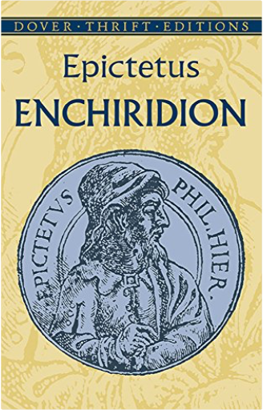
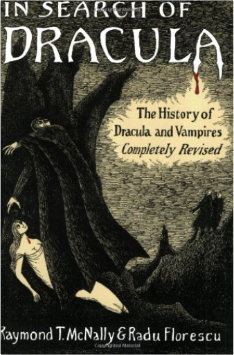
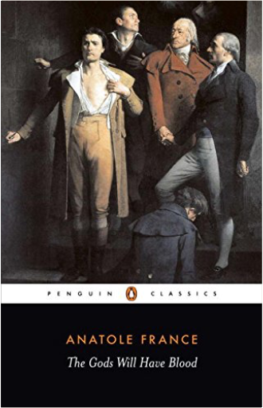

   The epic grandeur of Dante’s masterpiece has inspired readers for 700 years, and has entered the human imagination. But the further we move from the late medieval world of Dante, the more a rich understanding and enjoyment of the poem depends on knowledgeable guidance. Robert Hollander, a renowned scholar and master teacher of Dante, and Jean Hollander, an accomplished poet, have written a beautifully accurate and clear verse translation of the first volume of Dante’s epic poem, the Divine Comedy. Featuring the original Italian text opposite the translation, this edition also offers an extensive and accessible introduction and generous commentaries that draw on centuries of scholarship as well as Robert Hollander’s own decades of teaching and research. The Hollander translation is the new standard in English of this essential work of world literature.  Winner of the Whitbread Prize, Seamus Heaney’s translation "accomplishes what before now had seemed impossible: a faithful rendering that is simultaneously an original and gripping poem in its own right" (New York Times Book Review).The translation that "rides boldly through the reefs of scholarship" (The Observer) is combined with first-rate annotation. No reading knowledge of Old English is assumed. Heaney’s clear and insightful introduction to Beowulf provides students with an understanding of both the poem’s history in the canon and Heaney’s own translation process.  As the youngest-ever op-ed columnist for the New York Times, Ross Douthat has emerged as one of the most provocative and influential voices of his generation. In Bad Religion he offers a masterful and hard-hitting account of how American Christianity has gone off the rails—and why it threatens to take American society with it.  Accompany the world's greatest detective through the sinister streets of foggy London, into the most remarkable adventures imaginable: Each and every one of the stories in the volume — "A Scandal in Bohemia," "The Red-Headed League," "A Case of Identity," "The Boscombe Valley Mystery," "The Five Orange Pips," "The Man with the Twisted Lip," or the adventures of the Blue Carbuncle, the Speckled Band, the Engineer's Thumb, the Noble Bachelor, the Beryl Coronet, and the Copper Beeches — will thrill, delight and astound you. Watch the genius of detection grapple with treachery, duplicity, and murderous evil — watch him solve the insoluble, bring justice to the unjustifiable, and light to questions that will take no illumination. Sherlock Holmes is the one true pastmaster of the modern mystery; if you haven't read THE ADVENTURES OF SHERLOCK HOLMES, it's time to correct that error now.  A master of deductive reasoning who can solve the most difficult crimes by spotting obscure clues overlooked by others, dilettante sleuth Sherlock Holmes was the hero of sixty stories written by Sir Arthur Conan Doyle between 1887 and 1927. He even rose from the dead after Doyle tried to dispatch him in his twenty-fourth adventure, and readers protested. Here, in one volume, are all four full-length novels and fifty-six short stories about the colourful adventures of Sherlock Holmes- every word Sir Arthur Conan Doyle ever wrote about Baker Street's most famous resident. Also included is an introduction by lifetime Sherlockians Barbara and Christopher Roden. The Complete Sherlock Holmes is one of Barnes & Noble's Leatherbound Classics, with an exquisitely designed bonded-leather binding, distinctive gilt edging and a silk-ribbon bookmark.  A NEW YORK TIMES BESTSELLER The Marriage of Bette & BooChristopher Durang Never have marriage and the family been more scathingly or hilariously savaged than in this brilliant black comedy. The marriage of Bette and Boo brings together two of the maddest families in creation in a portrait album of family life’s uncertainties and confusion. Bereaved by miscarriages, undermined by their families, separated by alcoholism, assaulted by disease, and mystified by their priest, Bette and Boo, in their bewildered attempts to provide a semblance of hearth and home, are presented with a poignant compassion that enriches and enlarges the play, and places Christopher Durang squarely in the forefront of American dramatists. | A Nation of Takers: America's Entitlement EpidemicNicholas Eberstadt In A Nation of Takers: America’s Entitlement Epidemic, one of our country’s foremost demographers, Nicholas Eberstadt, details the exponential growth in entitlement spending over the past fifty years. As he notes, in 1960, entitlement payments accounted for well under a third of the federal government’s total outlays. Today, entitlement spending accounts for a full two-thirds of the federal budget. Drawing on an impressive array of data and employing a range of easy- to- read, four color charts, Eberstadt shows the unchecked spiral of spending on a range of entitlements, everything from medicare to disability payments. But Eberstadt does not just chart the astonishing growth of entitlement spending, he also details the enormous economic and cultural costs of this epidemic. He powerfully argues that while this spending certainly drains our federal coffers, it also has a very real,long-lasting, negative impact on the character of our citizens. Also included in the book is a response from one of our leading political theorists, William Galston. In his incisive response, he questions Eberstadt’s conclusions about the corrosive effect of entitlements on character and offers his own analysis of the impact of American entitlement growth. William F. Buckley Jr.: The Maker of a MovementLee Edwards “If you want to understand not only the rise of the modern conservative movement but also how conservatives can regain their footing during these perilous times, you must read William F. Buckley Jr.: The Maker of a Movement. Lee Edwards, himself a conservative icon, describes in beautiful and concise prose the brilliance that was Buckley. The book, like Buckley, is fascinating, compelling, and edifying.”  In a remarkable display of originality and discerning historical analysis Rites Of Spring describes the origins, the impact, and the aftermath of the Great War of 1914-1918, arguably the most traumatic event of this century.  Although he was born into slavery and endured a permanent physical disability, Epictetus (ca. 50–ca. 130 AD) maintained that all people are free to control their lives and to live in harmony with nature. We will always be happy, he argued, if we learn to desire that things should be exactly as they are. After attaining his freedom, Epictetus spent his entire career teaching philosophy and advising a daily regimen of self-examination. His pupil Arrianus later collected and published the master's lecture notes; the Enchiridion, or Manual, is a distillation of Epictetus' teachings and an instructional manual for a tranquil life. Full of practical advice, this work offers guidelines for those seeking contentment as well as for those who have already made some progress in that direction. Translated by George Long.  The true story behind the legend of Dracula - a biography of Prince Vlad of Transylvania, better known as Vlad the Impaler. This revised edition now includes entries from Bram Stoker's recently discovered diaries, the amazing tale of Nicolae Ceausescu's attempt to make Vlad a national hero, and an examination of recent adaptations in fiction, stage and screen.  It is April 1793 and the final power struggle of the French Revolution is taking hold: the aristocrats are dead and the poor are fighting for bread in the streets. In a Paris swept by fear and hunger lives Gamelin, a revolutionary young artist appointed magistrate, and given the power of life and death over the citizens of France. But his intense idealism and unbridled single-mindedness drive him inexorably towards catastrophe. Published in 1912, The Gods Will Have Blood is a breathtaking story of the dangers of fanaticism, while its depiction of the violence and devastation of the Reign of Terror is strangely prophetic of the sweeping political changes in Russia and across Europe. Ike and Dick: Portrait of a Strange Political MarriageJeffrey Frank Dwight D. Eisenhower and Richard Nixon had a political and private relationship that lasted nearly twenty years, a tie that survived hurtful slights, tense misunderstandings, and the distance between them in age and temperament. Yet the two men brought out the best and worst in each other, and their association had important consequences for their respective presidencies. |

John's Library
Collection Total:
163 Items
163 Items
Last Updated:
Apr 7, 2017
Apr 7, 2017
 Made with Delicious Library
Made with Delicious Library